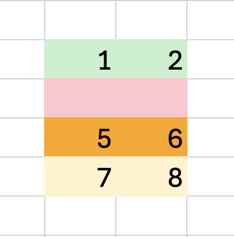

Compare Sheets
Please
sideload
your add-in to see app body.
Source sheet
Select a sheet…
Second sheet
Select a sheet…
Range mode
Used range of both sheets
Selected range
Dry run (analyze only)
Archive snapshot
Baseline (snapshots)
Select a snapshot…
Inspect snapshot
Upload baseline (.xlsx)
Baseline (uploads)
No uploads yet…
Inspect upload
Run Compare
Run Cross-Workbook Compare (summary)
Reset Tab Colors
Apply Overlay
Remove Overlay
Dump Model (dev)